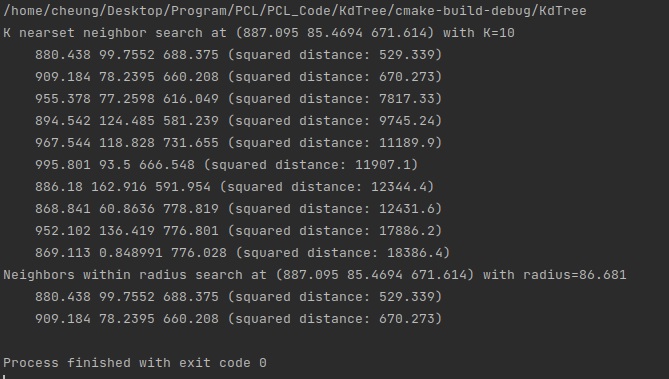

在本教程中，我们将介绍如何使用KdTree查找特定点或位置的K个最临近点，然后还将探讨如何找到用户指定半径内的所有邻居。
点云主要是表征目标表面的海量点的集合，并不具备传统网格数据的几何拓扑信息，所以点云数据处理中最为核心的问题就是建立离散点之间的拓扑关系，实现基于邻域关系的快速查找。
KdTree查找算法
KdTree搜索
1 2 3 4 5 6 7 8 9 10 11 12 13 14 15 16 17 18 19 20 21 22 23 24 25 26 27 28 29 30 31 32 33 34 35 36 37 38 39 40 41 42 43 44 45 46 47 48 49 50 51 52 53 54 55 56 57 58 59 60 61 62 63 64 65 66 67 68 69 70 #include <iostream> #include <vector> #include <ctime> #include <pcl/point_cloud.h> #include <pcl/kdtree/kdtree_flann.h> int main(int argc,char** argv){ srand(time(NULL));//用系统时间初始化随机种子 pcl::PointCloud<pcl::PointXYZ>::Ptr cloud(new pcl::PointCloud<pcl::PointXYZ>); //随机点云生成 cloud->width=1000; cloud->height=1; cloud->resize(cloud->height*cloud->width); for (size_t i = 0; i < cloud->size(); ++i) { cloud->points[i].x=1024.0f*rand()/(RAND_MAX+1.0f); cloud->points[i].y=1024.0f*rand()/(RAND_MAX+1.0f); cloud->points[i].z=1024.0f*rand()/(RAND_MAX+1.0f); } //创建KdTreeFLANN对象，并把创建的点云设置为输入，创建一个searchPoint变量作为查询点 pcl::KdTreeFLANN<pcl::PointXYZ> kdtree; //设定搜索空间 kdtree.setInputCloud(cloud); pcl::PointXYZ searchPoint; searchPoint.x=1024.0f*rand()/(RAND_MAX+1.0f); searchPoint.y=1024.0f*rand()/(RAND_MAX+1.0f); searchPoint.z=1024.0f*rand()/(RAND_MAX+1.0f); /********************K邻近搜索********************************** 设定一个值K，使用该搜索方法会搜索指定点的邻域，找出距离目标点最近的10个点 **************************************************************/ int K=10;//这里设定K为10 std::vector<int> pointIdxNKNSearch(K);//存储搜索到的点 std::vector<float> pointNKNSquareDistance(K);//存储搜索到的点与目标点距离的平方 std::cout<<"K nearset neighbor search at ("<<searchPoint.x <<" "<<searchPoint.y <<" "<<searchPoint.z <<") with K="<<K<<std::endl; if(kdtree.nearestKSearch(searchPoint,K,pointIdxNKNSearch,pointNKNSquareDistance)){ for (int i = 0; i < pointIdxNKNSearch.size(); ++i) { std::cout << " " << cloud->points[ pointIdxNKNSearch[i] ].x << " " << cloud->points[ pointIdxNKNSearch[i] ].y << " " << cloud->points[ pointIdxNKNSearch[i] ].z << " (squared distance: " << pointNKNSquareDistance[i] << ")" << std::endl; } } /********************KdTree半径搜索****************************** 设定一个半径，使用KdTree的搜索方式来搜索指定半径内的点，将其信息存储在向量中 **************************************************************/ std::vector<int> pointIdxRadiusSearch; std::vector<float> pointRadiusSquareDistance; float radius=256.0f*rand()/(RAND_MAX+1.0f); std::cout << "Neighbors within radius search at (" << searchPoint.x << " " << searchPoint.y << " " << searchPoint.z << ") with radius=" << radius << std::endl; if (kdtree.radiusSearch(searchPoint,radius,pointIdxRadiusSearch,pointRadiusSquareDistance)){ for (size_t i = 0; i < pointIdxRadiusSearch.size (); ++i) std::cout << " " << cloud->points[ pointIdxRadiusSearch[i] ].x << " " << cloud->points[ pointIdxRadiusSearch[i] ].y << " " << cloud->points[ pointIdxRadiusSearch[i] ].z << " (squared distance: " << pointRadiusSquareDistance[i] << ")" << std::endl; } }
输出结果如下:

输出结果